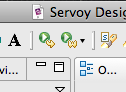

Installation
- 1. Servoy
- 2. Database
- 3. Plugins
- 4. URL rewrite
- 5. Data Sutra files
- 6. Server settings
- 7. Data Sutra modules
- 8. Starting up the clients
1. Servoy
Download Servoy developer from Servoy’s website. Note that Servoy 6.1.6 was the our tested and production version.
Run the installer and install with or without the PostgreSQL database (see recommendation in next section).
Servoy installation instructions
2. Database
Servoy can connect to any JDBC compliant database. We recommend
installing your database of choice using the recommended installer from the vendor. If you go this route, be sure to also download their
recommended JDBC driver and place in the
../Servoy/application_server/drivers directory.
Data Sutra is extensively tested with MySQL. and PostgreSQL.
Set up database connections
The following named database connections are required:
- sutra
- sutra_example
- sutra_log
We also recommend at least one more database connection to store all of your business application data in.
Setting up database connections instructions
3. Plugins
Install the following plugins into the
../Servoy/application_server/plugins directory:
4. URL rewrite
Download the Tuckey URL Rewrite Filter.
Add the urlrewritefilter-4.x.jar to the
../Servoy/application_server/server/webapps/ROOT/WEB-INF/lib directory (create the lib directory)
5. Data Sutra files
Download the latest Data Sutra zip file from the files section.
sutra.jarjar goes in the/Servoy/application_server/pluginsdirectory- Copy the contents of the
ROOTdirectory into Servoy’s server ROOT directory:/Servoy/application_server/server/webapps/ROOT. Note that this will overwrite some files.
6. Server settings
With developer running, open up the Servoy administration application at
http://localhost:8080/servoy-admin/. Change the following settings:
ADMIN SETTINGS section
servoy.application_server.allowClientRepositoryAccess: TRUE
NETWORK SETTINGS section
SocketFactory.tunnelConnectionMode: HTTPSocketFactory.compress: CHECKEDSocketFactory.useSSL: CHECKEDSocketFactory.tunnelUseSSLForHttp: CHECKED
FILE PLUGIN section
servoy.FileServerService.defaultFolder: /
Servoy admin page instructions
7. Data Sutra modules
In this section you import the Data Sutra modules into your workspace.
With Servoy Developer running, go to
File > Import... > Servoy > Import Solution.
First time install: import the sutra.servoy file.
If Data Sutra is already installed and you want to update to the latest
Data Sutra (and you are not hooked into our SVN repository), import the
sutra_no_connector.servoy file.
8. Starting up the clients
Data Sutra comes preconfigured with a sample solution, sample users and security turned on. This allows you to jump right in to a complete working solution once you are done with the installation. In both of the following cases, you should be presented with a login screen.
Login info
username: mbolton
password: rocks
Starting Smart Client
Click on the Smart Client button in the Servoy toolbar. It’s the prominent green circle button with a single yellow arrow:

Starting Web Client
Web client is handled a little differently than the Servoy default approach (clicking the prominent green circle button with the DOUBLE yellow arrow). This is because we run Servoy web client via an iframe on our own html pages (which you installed).
Instead, open up the following url in your Google Chrome browser:
http://localhost:8080/